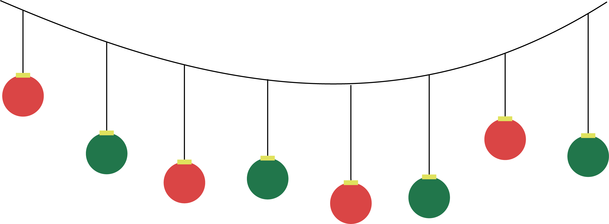
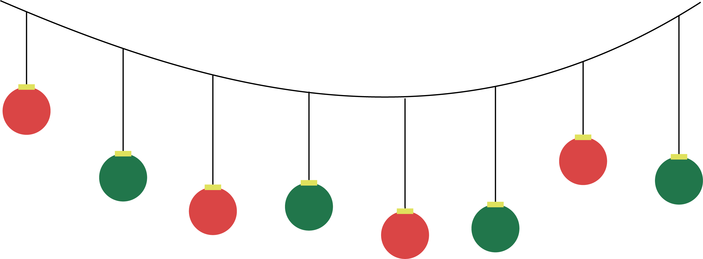
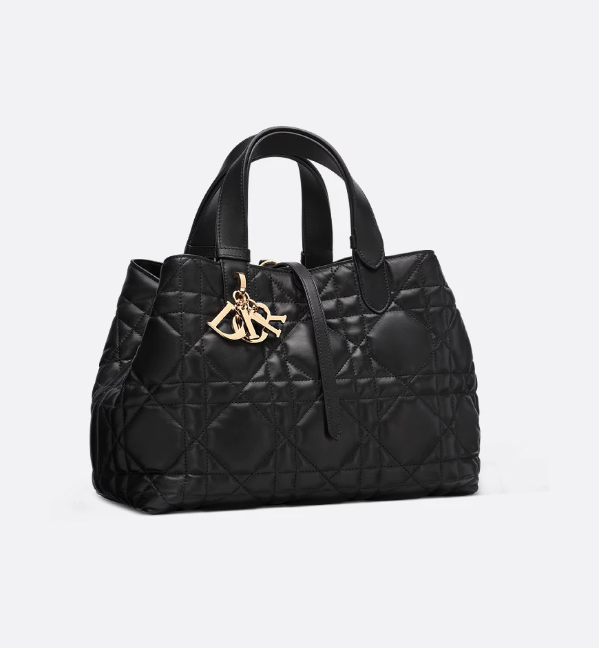
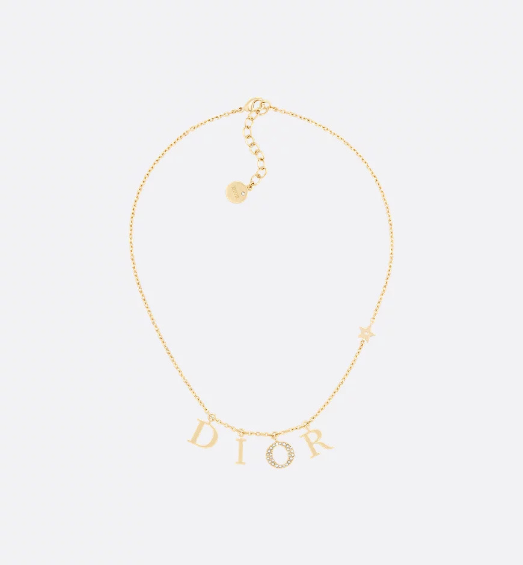

Cadeaus voor haar voor de feestdagen
Ontdek
Maak de momenten samen tijdens de magische kertperiode extra speciaal met een uniek cadeau dat de elegantie van Diors dameskleding uitstraalt
345 artikelen
-
Filter

-
Categorie

-
Kleur
-
Sorteer volgens
alle producten
-
Middelgrote Dior toujours-tas
€3.500,00
 -
Dio(r)evolution-ring
€320,00

-
Walk'n'Dior-sneaker
€950,00
Nieuw

-
Mitzah-sjaal met Dior Oblique-motief
€210,00
Nieuw

-

-
Middlegrote Dior Book Tote
€3.000,00
Nieuw

-
DiorSignature R21
€490,00

-
Dio(r)evolution-ketting
€520,00
 -
Vierkante sjaal met Dior Around the World-motief, (90 x 90 cm)
€490,00
Nieuw

Ontdek de kunst van het cadeau geven, een traditie die gekoesterd wordt door het Maison Dior en zijn oprichter. Of je nu op zoek bent naar de beste kerstcadeaus voor mama, een perfecte kerstcadeau voor haar of een uniek kerstcadeau voor je vrouw, de door Dior samengestelde selectie van luxe kerstcadeaus vrouwen brengt het perfecte vleugje luxe en belichaamt de ware geest van het geven. Ontdek onze selectie unieke beste kerstcadeaus voor vrouwen gecreëerd onder de visie van creatief directeur Maria Grazia Chiuri. Van luxe tassen en tijdloze accessoires tot elegante ready-to-wear kledingstukken - van jurken tot gebreide kleding - elk cadeau is ontworpen om haar speciaal te laten voelen. Denk ook eens aan gepersonaliseerde cadeaus, zoals speciale tassen en kussens die uniek zijn en die haar unieke stijl weerspiegelen. Voor wie op zoek is naar de beste kerstcadeaus voor haar, bevat de collectie van Dior prachtige items, perfect om een vleugje glamour aan de feestdagen toe te voegen. Of het nu gaat om luxe cadeaus voor haar zoals een klassieke Lady Dior-tas of unieke cadeau-ideeën voor je vrouw zoals een luxe pyjama, elke selectie is tot in de puntjes verzorgd. Vier het seizoen met luxe kerstcadeau-ideeën voor haar die het iconische vakmanschap van Dior laten zien. Of je nu kiest voor luxe geschenken of iets speciaals zoekt voor een geliefde, Dior zorgt ervoor dat elk geschenk een tijdloze stijl en doordachte elegantie uitstraalt.